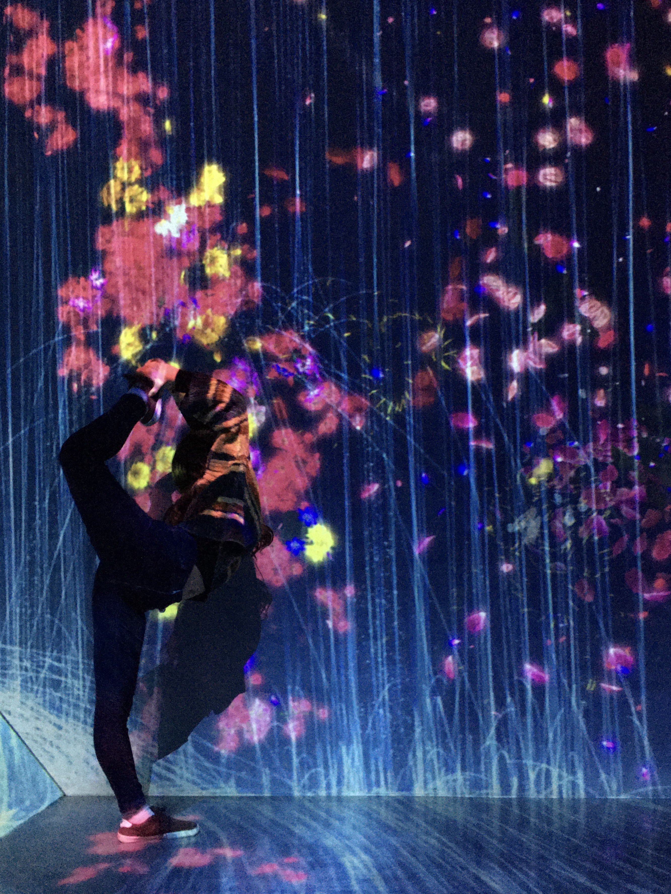
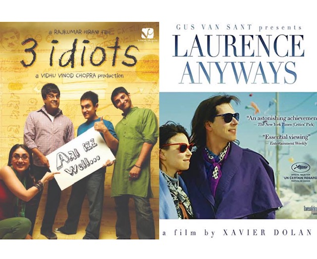
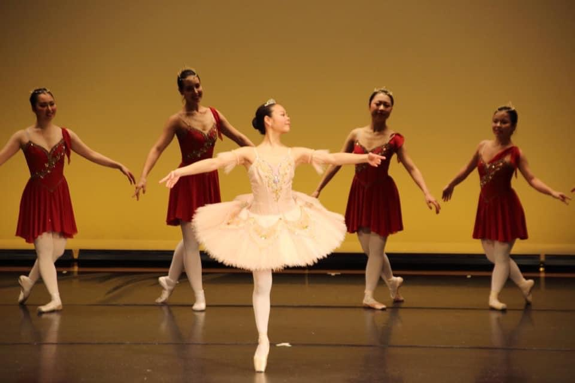
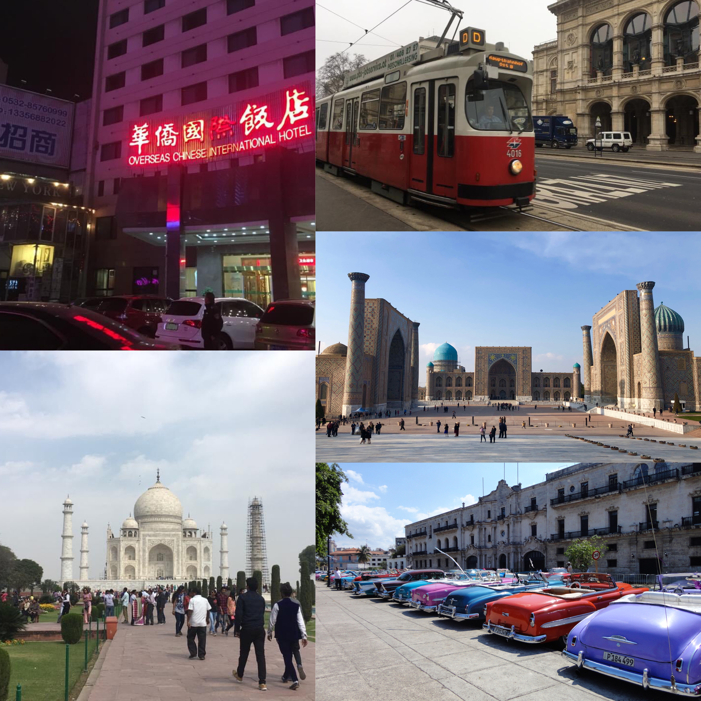
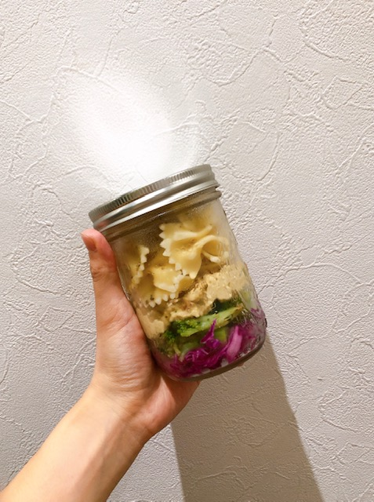

My Profile
YUKI Nakajima
- 北海道出身
- 東京外国語大学言語文化学部フランス語学科卒業
- 趣味：芸術・映画鑑賞、ダンス、旅行、自然散策など
- 80％Vegan
My Hobbies
ART
芸術といっても幅広ですが、よく美術館に行ったりバレエを鑑賞したりします。映画は主にアート/クラシック/ドキュメンタリー/ヒューマンドラマを観ます。最近の一押しはグザヴィエ・ドランとアーミル・カーン！あとは文学作品も好きです。
DANCE
大学時代はクラシックバレエ部に所属し、数年前にラテンダンスに出会い、今ではライフサイクルの一環になりました。ラテンダンスはサルサ/バチャータ/キゾンバ/メレンゲなど様々なジャンルがあり、奥の深い世界です。やってみたい方はぜひ私と一緒に♪
TRAVEL
今まで10か国以上を友達と行ったり、1人で旅したりしました。異国のバス停で一夜を明かしたり、食あたりで食事が3日間正露丸だったりとクレイジーな体験も結構しました。
LIFESTYLE
実は様々な理由から1人の時は動物性食品はあんまり食べません。自分にも地球にも優しいライフスタイル模索中♪